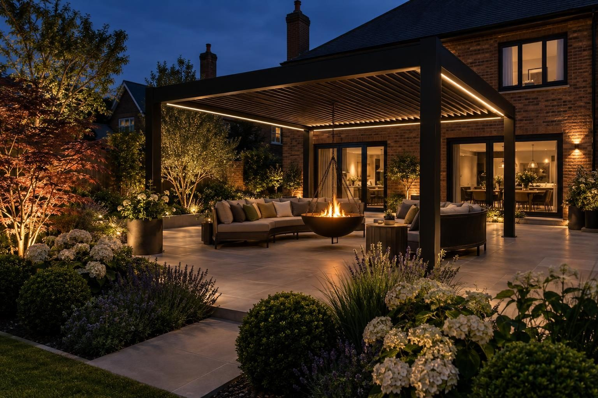

Driveways, gardens and building work in Kettering
Driveways, patios, garden transformations, extensions and conversions across Kettering and the villages around it.
For a typical Kettering drive of 30–50m², a resin bound driveway costs roughly £4,500–£11,000 and block paving £3,500–£8,500. A 20–35m² porcelain patio is roughly £3,000–£7,000, and a full garden transformation typically £15,000–£35,000. A new or wider entrance needs a dropped kerb from North Northamptonshire Council: £333 for the licence and inspection, with the crossing built by an approved contractor, and we can build it for you.
- Council
- North Northamptonshire Council
- Postcode
- NN15 and NN16
- Conservation
- Conservation area; no Article 4 affecting driveways
- Ground
- Ironstone and clay; compacted new-build plots
Our 2026 guide prices, all in. Your fixed price comes in writing after the site visit. Council fees checked October 2026.
Homes, ground and conservation in Kettering
Kettering has Victorian and Edwardian terraces and villas close to the centre and along the Headlands, interwar and post-war estates, Barton Seagrave to the south east, and Hanwood Park on the east side, planned for up to 5,500 homes.
Ground around Kettering ranges from ironstone to clay, and new-build plots are often compacted subsoil under a thin layer of topsoil. We check what is under each garden before choosing the base and the drainage.
Kettering has 26 conservation areas, including the town centre, Barton Seagrave, Burton Latimer, Geddington and Rothwell. Its Article 4 directions are site-specific, mostly older ones covering individual streets or buildings, so we check your address before designing anything that faces the road.
The River Ise runs along the east of the town, with river level stations at Barford Bridge and Slade Brook. Check any address on the Environment Agency flood map.
Sources: North Northamptonshire Article 4 directions · Hanwood Park.
Council rules and fees for Kettering
- Dropped kerbs: £333 licence and inspection fee; built by a contractor approved by the council, which we can do for you. North Northamptonshire Council: dropped kerbs
- Front driveways: A permeable drive, or one that drains to your own lawn or border, needs no planning permission; more than 5m² of impermeable surface draining to the road does. Planning Portal guidance
- Planning: householder applications cost £548 (national fee from April 2026); pre-application advice from North Northamptonshire Council costs £187. Pre-application advice
- Building regulations: North Northamptonshire Council building control. Garage conversion quoted by the council for each job (no published schedule); extension quoted by the council for each job. Building control
- Trees: six weeks' notice for trees in a conservation area, consent for protected trees; both free. North Northamptonshire: tree protection
Checked October 2026.
Every service in Kettering
Driveways

Resin driveways

Block paving driveways

Tarmac driveways

Dropped kerbs

Permeable driveways

Driveway drainage

Driveway gates

Bin stores

Porcelain patios

Sandstone patios

Landscaping

Composite & timber decking

Fencing

Garden lighting

Louvred pergolas

Glass verandas

Outdoor kitchens

Fire pits & sunken seating

Hot tub & swim spa bases

Garage conversions

House extensions

Porch extensions

Accessible paths & ramps

Building services
Every service in Kettering
Driveways
- Driveways in Kettering
- Resin driveways in Kettering
- Block paving driveways in Kettering
- Tarmac driveways in Kettering
- Gravel driveways
- Dropped kerbs in Kettering
- Driveway repairs
- Permeable driveways in Kettering
- Driveway drainage in Kettering
- Driveway gates in Kettering
- Bin stores in Kettering
- Block paving cleaning
- Do I need planning for a driveway?
Patios and gardens
Outdoor living
Building work
Rated 5.0 from 37 Google reviews
“Lewis and his team recently carried out the fitting of a European oak clad sleeper wall and the construction of new steps leading from the patio up into the lawn area at our home in Lyddington. We are really pleased with the result, it looks great and is exactly what we wanted. …”
Sally, Lyddington · Oak clad sleeper wall and garden steps — Google review
“Well what can I say about Rutland driveways that would make you seriously consider using them for your project I contacted them had a meeting with the team who was very informative with the level of inspiration I had ideas they had ideas and recommendations we bounced ideas to come up with the best option possible for my …”
Steven · Drive, walkway, patio and garden — Google review
Villages we cover around Kettering
- Barton Seagrave
- Burton Latimer
- Geddington
- Broughton
- Cransley
- Pytchley
- Rothwell
- Desborough
- Mawsley
Things people in Kettering ask us
How much does a driveway cost in Kettering?
Which council covers Kettering?
Do I need planning permission for a driveway in Kettering?
How quickly can you visit Kettering?
Request a site visit in Kettering
We measure up, check levels and drainage, and send a written proposal with the build-up, the programme and one whole price. No pressure and no follow-up sales calls.